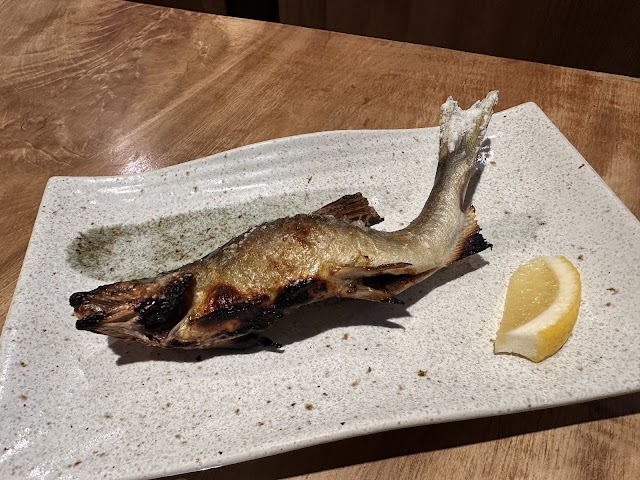
| 営業時間 | 月・火・木・金・土・日 11:30〜13:30, 17:00〜19:00 |
|---|---|
| 定休日 | 水曜 |
| 住所 | 岐阜県岐阜市元浜町２０ |
| 予約 | 可 — ☎ 058-263-6788 ／ 公式サイト |
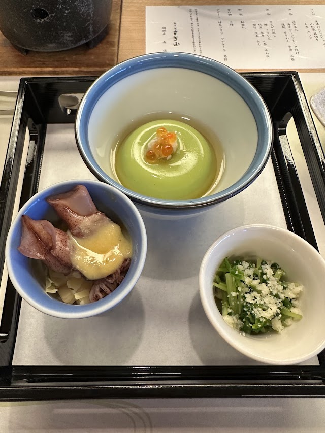
| 営業時間 | 昼食11:30〜14:00（LO13:00） |
|---|---|
| 定休日 | 不定休 |
| 住所 | 岐阜県岐阜市長良７３−１ |
| 予約 | 要確認 — ☎ 058-231-0161 ／ 公式サイト |
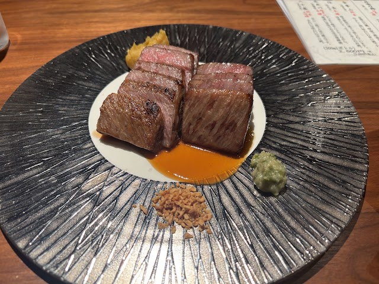
| 営業時間 | 月・水・木・金 11:30〜15:00, 17:30〜22:00 ／ 土・日 11:00〜15:30, 17:30〜22:00 |
|---|---|
| 定休日 | 火曜 |
| 住所 | 岐阜県岐阜市米屋町９ |
| 予約 | 可 — ☎ 058-214-8960 ／ 公式サイト |
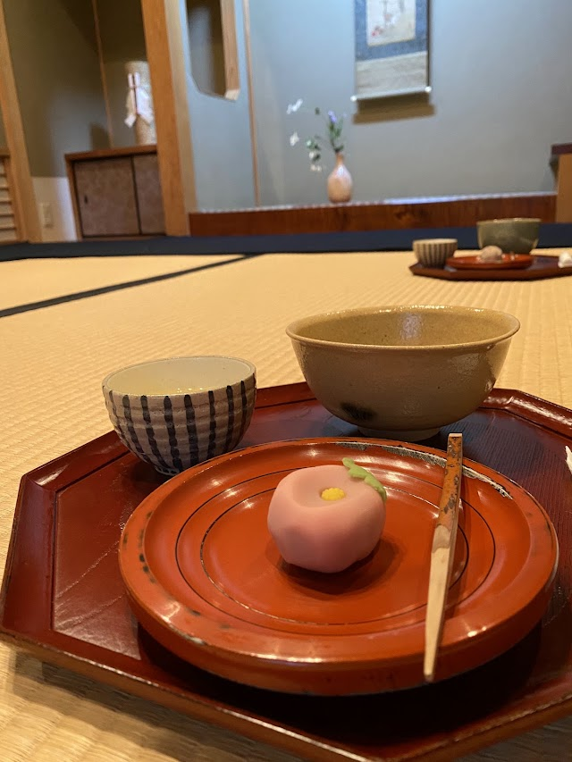
| 営業時間 | 月・火・木・金・土・日 8:00〜19:00 |
|---|---|
| 定休日 | 水曜 |
| 住所 | 岐阜県岐阜市湊町４２ |
| 予約 | 要確認 — ☎ 0120-601-276 ／ 公式サイト |
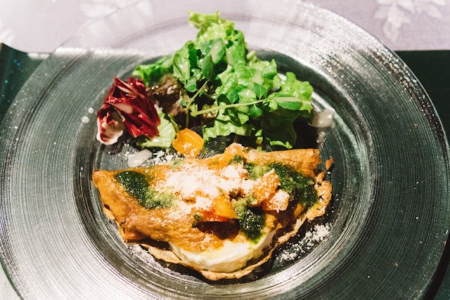
| 営業時間 | 月・火・水・木・金・土・日 11:30〜14:30, 17:30〜21:00 |
|---|---|
| 定休日 | なし(要最終確認) |
| 住所 | 岐阜県岐阜市元浜町３５ |
| 予約 | 可 — ☎ 058-212-0132 ／ 公式サイト |
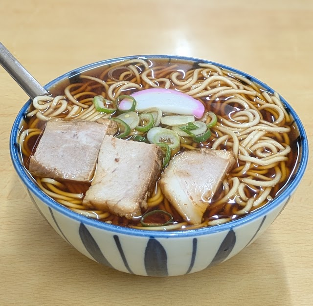
| 営業時間 | 月・火・水・木・金 11:00〜18:00 ／ 土・日 11:00〜16:00 |
|---|---|
| 定休日 | なし(要最終確認) |
| 住所 | 岐阜県岐阜市日ノ出町３丁目１−１ |
| 予約 | 要確認 — ☎ 058-262-9573 |
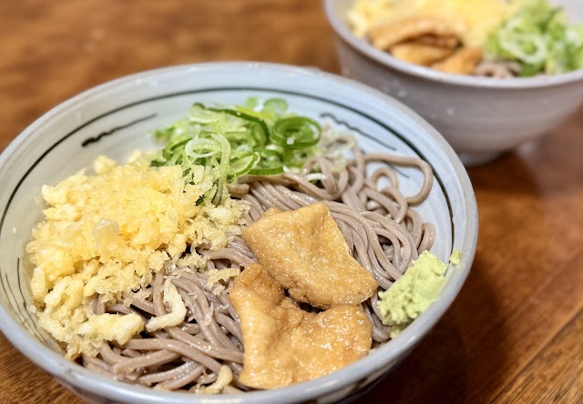
| 営業時間 | 月・火・水・金・土・日 10:30〜16:45 |
|---|---|
| 定休日 | 木曜 |
| 住所 | 岐阜県岐阜市京町３丁目４ |
| 予約 | 要確認 — ☎ 058-265-9594 ／ 公式サイト |
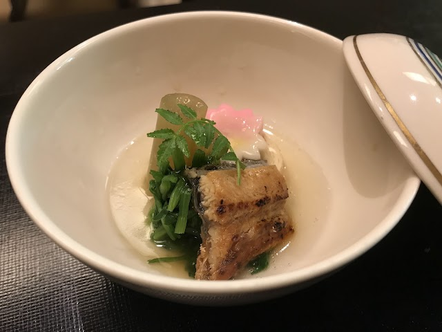
| 営業時間 | 火・水・木・金・土・日 17:00〜22:00 |
|---|---|
| 定休日 | 月曜 |
| 住所 | 岐阜県岐阜市本町１丁目１−３１ |
| 予約 | 可 — ☎ 058-264-0027 ／ 公式サイト |
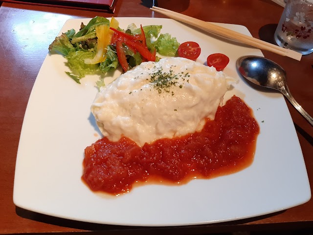
| 営業時間 | 月・火・水・金 11:00〜16:00 ／ 土・日 11:00〜17:30 |
|---|---|
| 定休日 | 木曜 |
| 住所 | 岐阜県岐阜市玉井町２８ |
| 予約 | 可 — ☎ 058-266-5144 ／ 公式サイト |
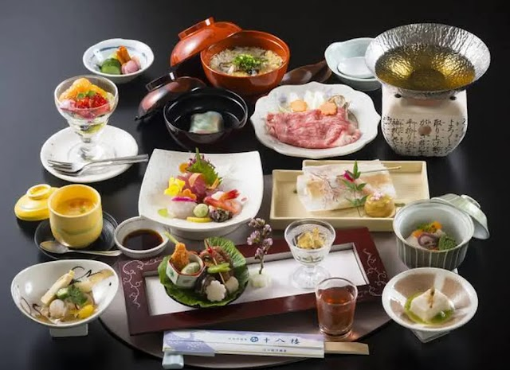
| 営業時間 | 月・火・水・木・金・土・日 9:00〜21:00 |
|---|---|
| 定休日 | なし(要最終確認) |
| 住所 | 岐阜県岐阜市湊町１０ |
| 予約 | 要確認 — ☎ 058-265-1551 ／ 公式サイト |
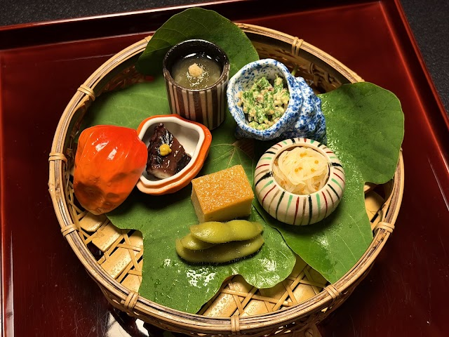
| 営業時間 | 月・火・水・木・金・土・日 11:30〜14:00, 17:00〜20:00 |
|---|---|
| 定休日 | なし(要最終確認) |
| 住所 | 岐阜県岐阜市杉山町１７−２ |
| 予約 | 可 — ☎ 058-262-1750 ／ 公式サイト |
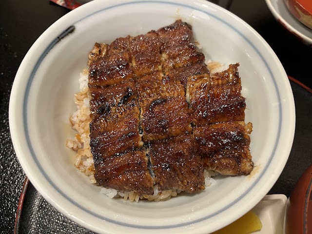
| 営業時間 | 火・水・木・金・土・日 11:30〜14:00, 17:00〜20:00 |
|---|---|
| 定休日 | 月曜 |
| 住所 | 岐阜県岐阜市加納本町２丁目17番地 |
| 予約 | 要確認 — ☎ 058-271-7843 ／ 公式サイト |
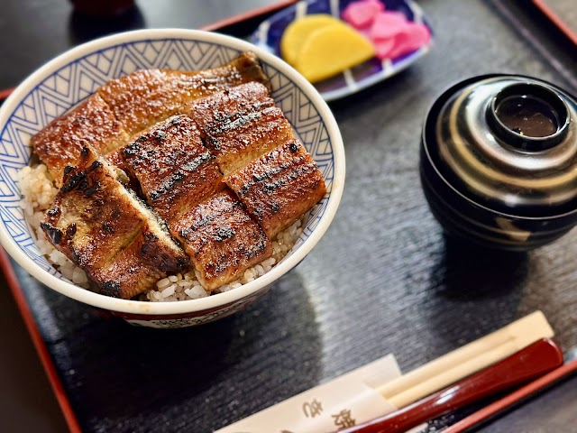
| 営業時間 | 月・火・木・金・土・日 11:00〜13:30, 17:00〜19:30 |
|---|---|
| 定休日 | 水曜 |
| 住所 | 岐阜県岐阜市東栄町３丁目２９−２ 炭焼きうなぎ華紋 |
| 予約 | 可 — ☎ 058-246-0844 |
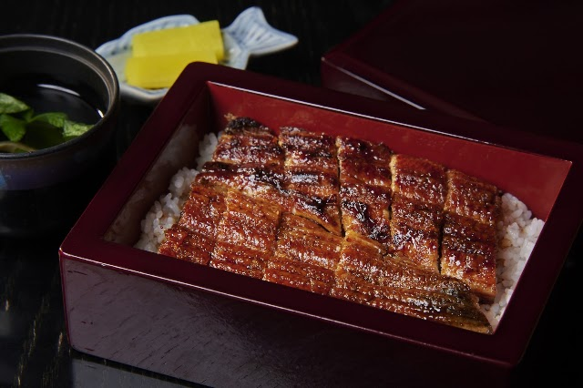
| 営業時間 | 月・木・金・土・日 11:00〜14:00, 17:00〜19:00 |
|---|---|
| 定休日 | 火・水曜 |
| 住所 | 岐阜県岐阜市柳津町東塚３丁目２５−２５ |
| 予約 | 要確認 — ☎ 058-388-2892 ／ 公式サイト |
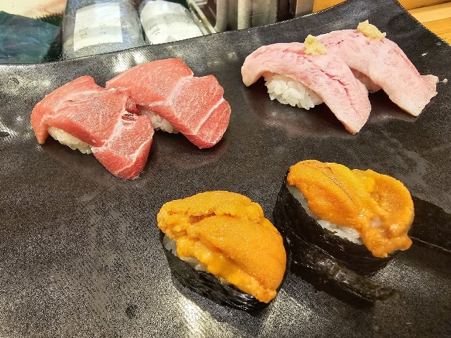
| 営業時間 | 火・水・木・金・土・日 11:30〜14:00, 17:00〜22:00 |
|---|---|
| 定休日 | 月曜 |
| 住所 | 岐阜県岐阜市長住町４丁目５ |
| 予約 | 可 — ☎ 058-264-8491 ／ 公式サイト |
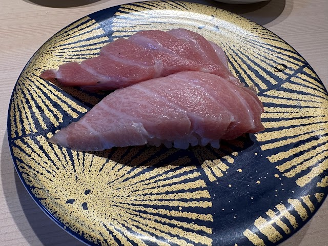
| 営業時間 | 月・火・水・木・金・土・日 11:00〜22:00 |
|---|---|
| 定休日 | なし(要最終確認) |
| 住所 | 岐阜県岐阜市鏡島精華１丁目７−２ あみもとの里 |
| 予約 | 要確認 — ☎ 058-251-1115 ／ 公式サイト |
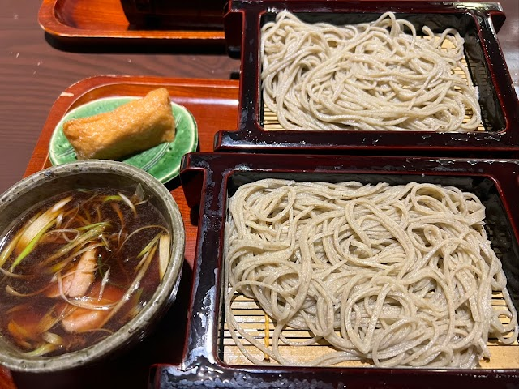
| 営業時間 | 火・水・木・金 11:00〜15:00 ／ 土・日 11:00〜15:00, 17:00〜20:00 |
|---|---|
| 定休日 | 月曜 |
| 住所 | 岐阜県岐阜市米屋町２５ |
| 予約 | 可 — ☎ 058-265-3608 ／ 公式サイト |
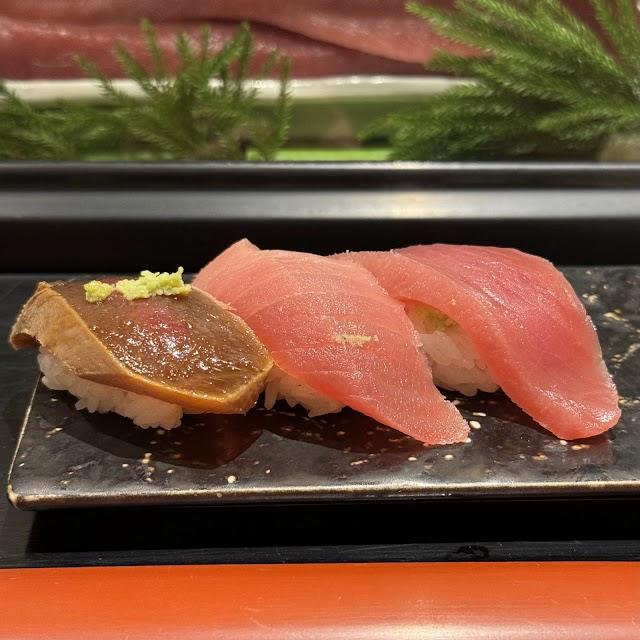
| 営業時間 | 月・火・水・木・金・土・日 11:30〜14:15, 17:00〜21:30 |
|---|---|
| 定休日 | なし(要最終確認) |
| 住所 | 岐阜県岐阜市日ノ出町２丁目１２ |
| 予約 | 可 — ☎ 058-264-4871 ／ 公式サイト |
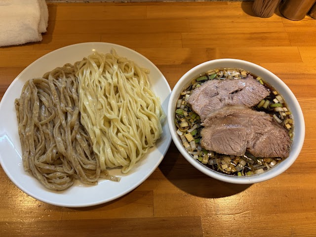
| 営業時間 | 11:00〜14:15／17:30〜21:15 |
|---|---|
| 定休日 | 不定休 |
| 住所 | 岐阜県岐阜市島栄町２丁目５３ コーポ栄 |
| 予約 | 要確認 — 公式サイト |
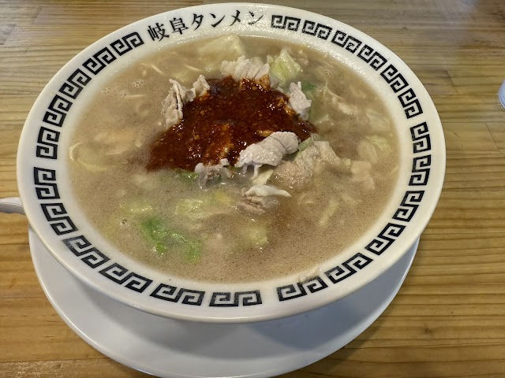
| 営業時間 | 月・火・水・木・金・土・日 11:00〜3:00 |
|---|---|
| 定休日 | なし(要最終確認) |
| 住所 | 岐阜県岐阜市手力町３８−１ |
| 予約 | 要確認 — ☎ 058-338-5609 ／ 公式サイト |
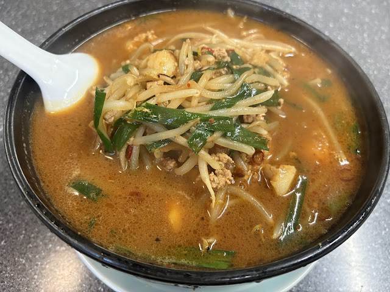
| 営業時間 | 月・木・金・土・日 11:00〜13:30, 17:00〜19:45 |
|---|---|
| 定休日 | 火・水曜 |
| 住所 | 岐阜県岐阜市川部２丁目６４ |
| 予約 | 要確認 — ☎ 058-239-3612 |
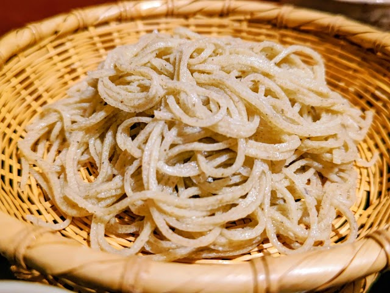
| 営業時間 | 火・水・木・金・土・日 11:00〜14:00 |
|---|---|
| 定休日 | 月曜 |
| 住所 | 岐阜県岐阜市日光町３丁目２６ |
| 予約 | 要確認 — ☎ 058-232-6776 ／ 公式サイト |
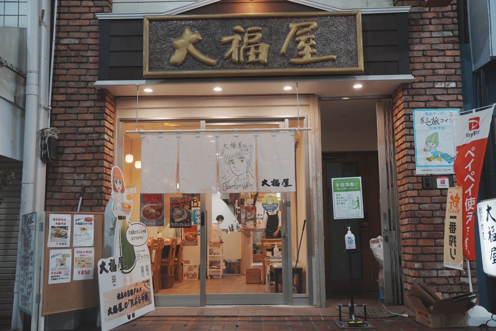
| 営業時間 | 月・火・水・金・土・日 11:30〜17:30 |
|---|---|
| 定休日 | 木曜 |
| 住所 | 岐阜県岐阜市神室町１丁目12−１ 福井ビル 1F |
| 予約 | 要確認 — ☎ 058-265-6818 ／ 公式サイト |
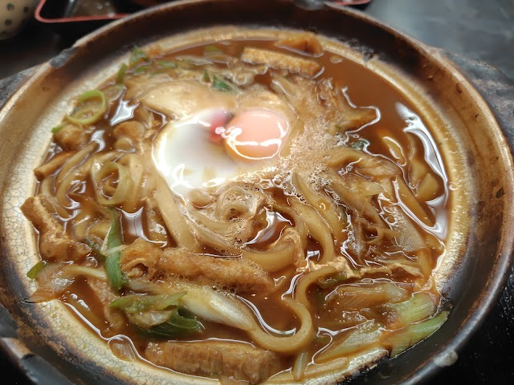
| 営業時間 | 月・水・木・金・土・日 11:00〜15:00, 17:00〜21:00 |
|---|---|
| 定休日 | 火曜 |
| 住所 | 岐阜県岐阜市六条南２丁目９−１３ |
| 予約 | 要確認 — ☎ 058-273-9272 ／ 公式サイト |
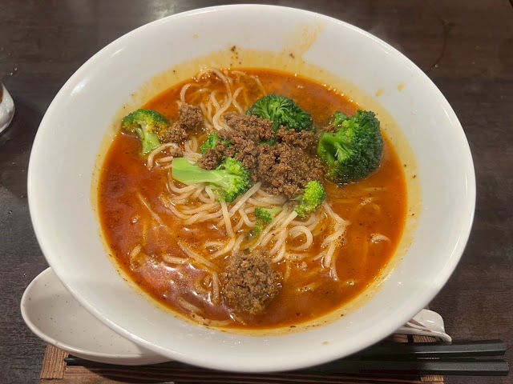
| 営業時間 | 月・火・水・木・金・土 11:30〜14:00, 17:30〜22:30 ／ 日 17:30〜22:30 |
|---|---|
| 定休日 | なし(要最終確認) |
| 住所 | 岐阜県岐阜市羽根町１２−９ |
| 予約 | 可 — ☎ 058-201-0553 ／ 公式サイト |
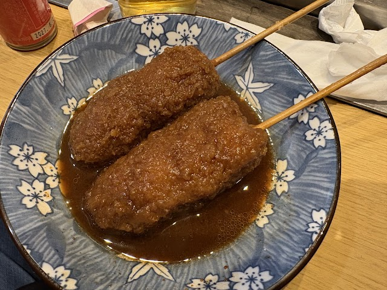
| 営業時間 | 月・火・水・木・金 14:00〜20:00 ／ 土 12:30〜17:00 |
|---|---|
| 定休日 | 日曜 |
| 住所 | 岐阜県岐阜市長住町４丁目２ |
| 予約 | 可 — ☎ 058-264-9368 |
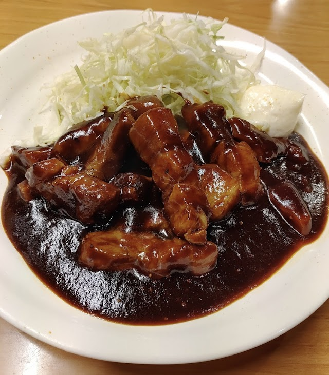
| 営業時間 | 火・水・木・日 17:00〜23:00 ／ 金・土 17:00〜0:00 |
|---|---|
| 定休日 | 月曜 |
| 住所 | 岐阜県岐阜市玉宮町１丁目６−２ |
| 予約 | 可 — ☎ 058-263-3444 ／ 公式サイト |
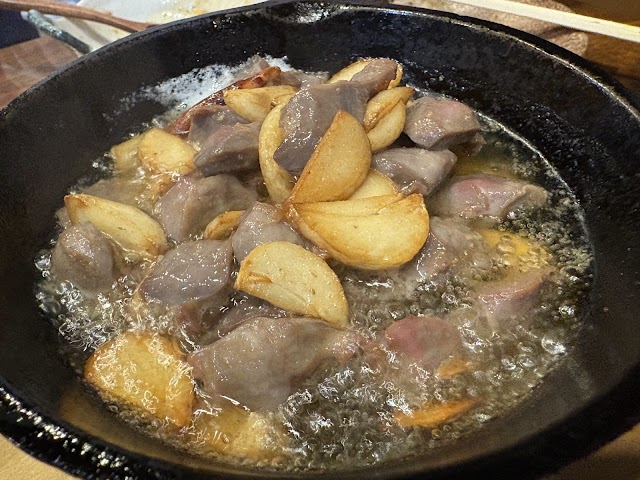
| 営業時間 | 水・木・金 17:00〜22:00 ／ 土・日 15:00〜22:00 |
|---|---|
| 定休日 | 月・火曜 |
| 住所 | 岐阜県岐阜市玉宮町１丁目１３−３ |
| 予約 | 可 — ☎ 058-262-8844 ／ 公式サイト |
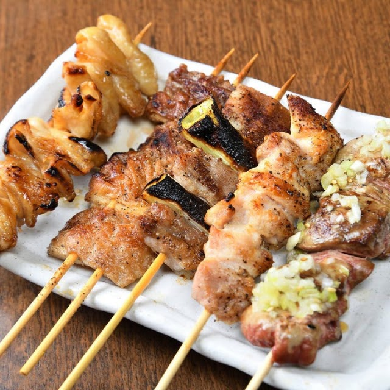
| 営業時間 | 月・火・水・木・金・土・日 13:00〜0:00 |
|---|---|
| 定休日 | なし(要最終確認) |
| 住所 | 岐阜県岐阜市神田町９丁目１８ 新岐阜駅前第一ビル 1F |
| 予約 | 可 — ☎ 050-5485-1616 ／ 公式サイト |
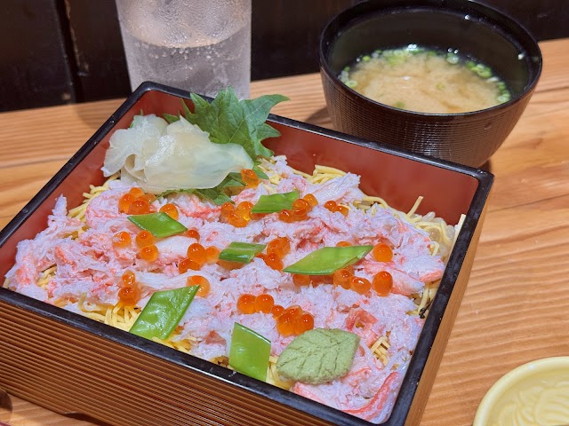
| 営業時間 | 17:30〜23:00（金・土〜24:00、月曜のみランチ11:30〜14:00あり） |
|---|---|
| 定休日 | 日曜 |
| 住所 | 岐阜県岐阜市日ノ出町３丁目４ 慕陶ビル 1F |
| 予約 | 要確認 — ☎ 058-265-5377 |
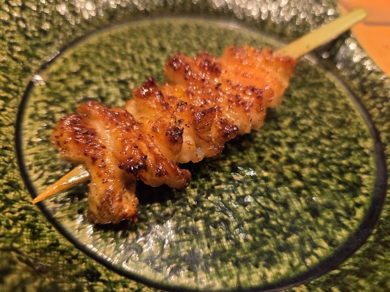
| 営業時間 | 月・火・水・金・土・日 17:30〜23:00 |
|---|---|
| 定休日 | 木曜 |
| 住所 | 岐阜県岐阜市神田町３丁目９ 岐阜屋本店ビル 2階 |
| 予約 | 可 — ☎ 058-264-0715 ／ 公式サイト |
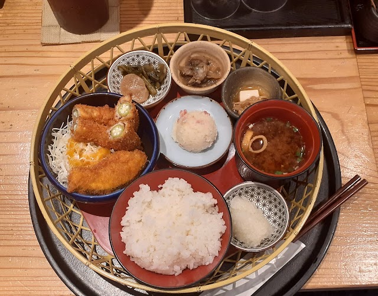
| 営業時間 | 月・火・水・木・金・土・日 11:00〜14:30, 17:00〜23:00 |
|---|---|
| 定休日 | なし(要最終確認) |
| 住所 | 岐阜県岐阜市住田町２丁目１３−５ |
| 予約 | 可 — ☎ 058-213-2678 ／ 公式サイト |
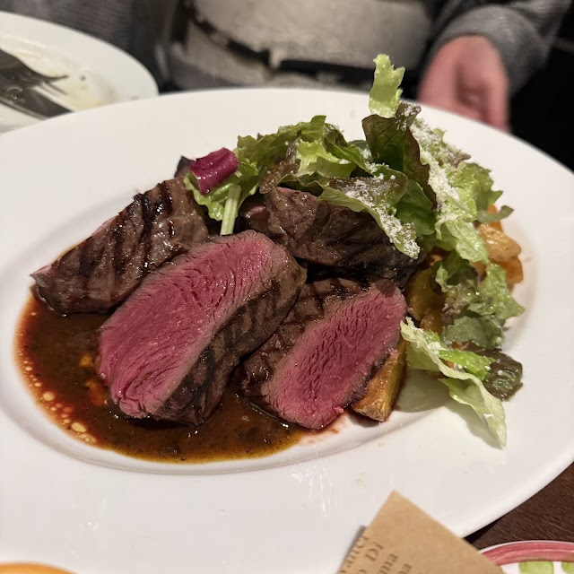
| 営業時間 | 火・水・木・金・土・日 18:00〜0:00 |
|---|---|
| 定休日 | 月曜 |
| 住所 | 岐阜県岐阜市羽根町8番地１ |
| 予約 | 可 — ☎ 058-263-7477 ／ 公式サイト |
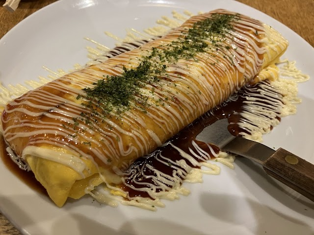
| 営業時間 | 火・水・木・金 17:00〜23:00 ／ 土 12:00〜23:00 ／ 日 12:00〜22:00 |
|---|---|
| 定休日 | 月曜 |
| 住所 | 岐阜県岐阜市玉宮町２丁目１５−３ |
| 予約 | 可 — ☎ 058-264-1310 ／ 公式サイト |
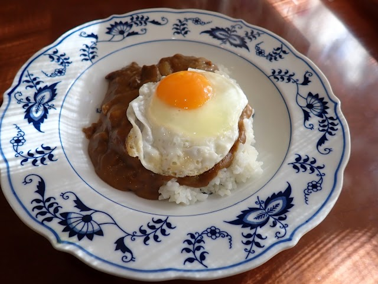
| 営業時間 | 月・火・水・土・日 11:30〜14:00 |
|---|---|
| 定休日 | 木・金曜 |
| 住所 | 岐阜県岐阜市伊奈波通１丁目６５−３ |
| 予約 | 要確認 — ☎ 058-263-0325 |
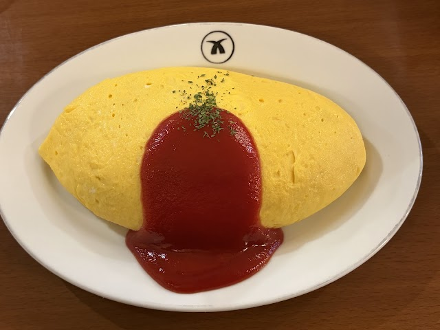
| 営業時間 | 火・水・木・金・土・日 11:00〜17:00 |
|---|---|
| 定休日 | 月曜 |
| 住所 | 岐阜県岐阜市神田町６丁目16−３ |
| 予約 | 要確認 — ☎ 058-262-4067 |
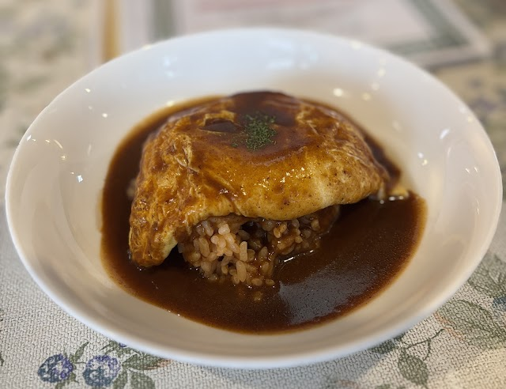
| 営業時間 | 月・水・木・金・土・日 8:00〜14:00 |
|---|---|
| 定休日 | 火曜 |
| 住所 | 岐阜県岐阜市雄総桜町４丁目２１ |
| 予約 | 可 — ☎ 058-231-1269 |
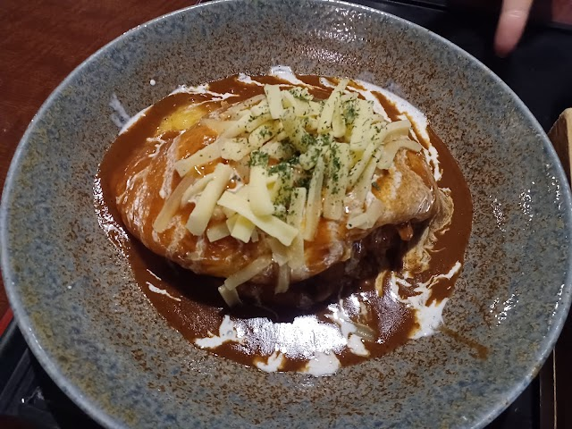
| 営業時間 | 水・木・金・土・日 11:30〜14:00, 18:00〜20:30 |
|---|---|
| 定休日 | 月・火曜 |
| 住所 | 岐阜県岐阜市加納奥平町２丁目４０ |
| 予約 | 可 — ☎ 058-273-3992 ／ 公式サイト |
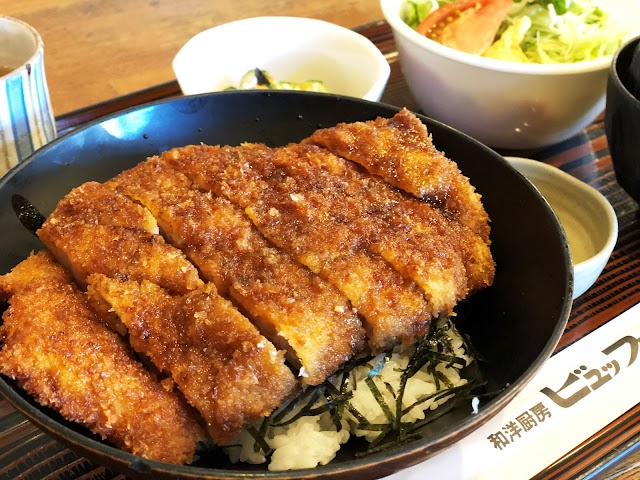
| 営業時間 | 月・木・金 11:00〜14:00, 17:00〜19:30 ／ 土・日 11:00〜19:30 |
|---|---|
| 定休日 | 火・水曜 |
| 住所 | 岐阜県岐阜市学園町３丁目４３ |
| 予約 | 可 — ☎ 058-231-2711 ／ 公式サイト |
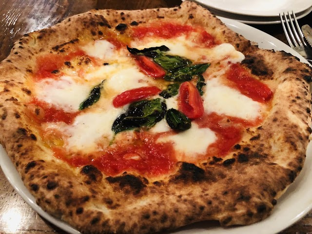
| 営業時間 | 火・水・木・金・土・日 11:30〜14:00, 17:30〜21:00 |
|---|---|
| 定休日 | 月曜 |
| 住所 | 岐阜県岐阜市神田町７丁目１７ 神田ビル １F |
| 予約 | 可 — ☎ 058-266-1116 ／ 公式サイト |
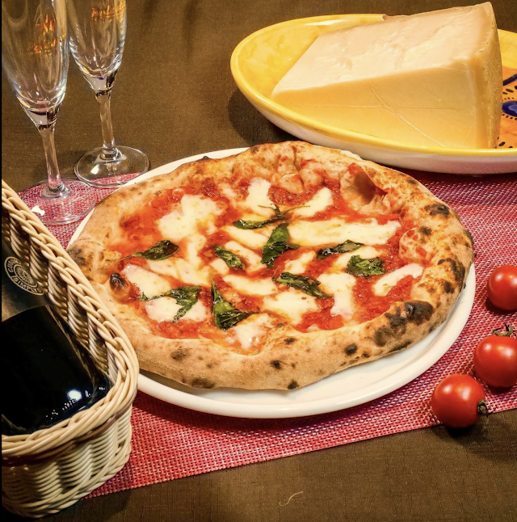
| 営業時間 | 火・水・木・金・土・日 11:30〜14:00, 17:30〜21:00 |
|---|---|
| 定休日 | 月曜 |
| 住所 | 岐阜県岐阜市河渡４丁目８７ |
| 予約 | 可 — ☎ 058-214-9559 ／ 公式サイト |
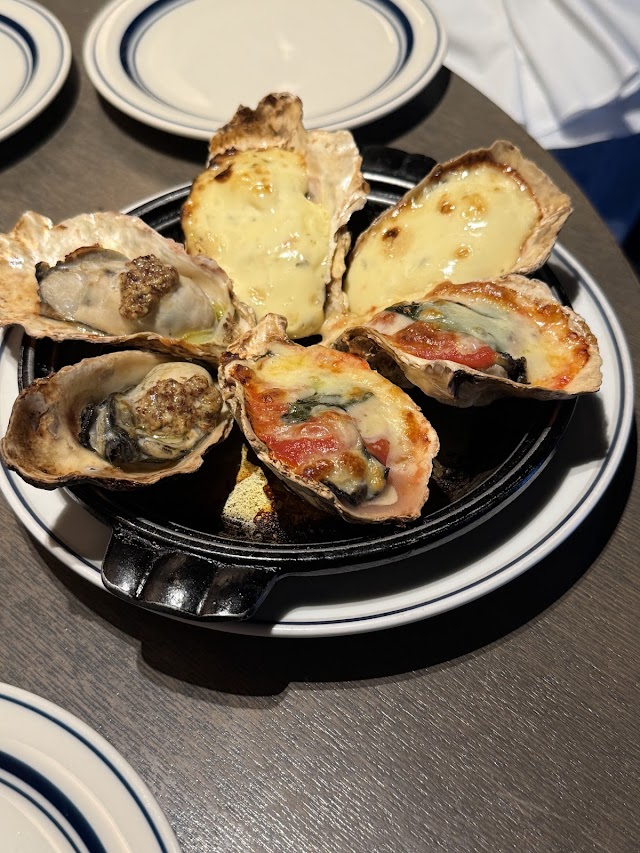
| 営業時間 | 月・火・水・木・金・土 17:00〜0:00 |
|---|---|
| 定休日 | 日曜 |
| 住所 | 岐阜県岐阜市八幡町１４−３ |
| 予約 | 可 — ☎ 058-215-8874 ／ 公式サイト |
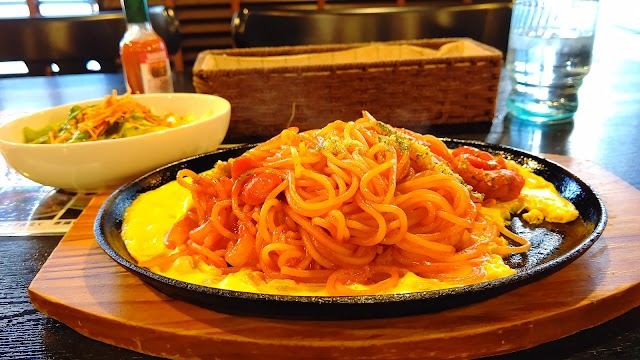
| 営業時間 | 月・火・水・木・金・土・日 6:30〜19:30 |
|---|---|
| 定休日 | なし(要最終確認) |
| 住所 | 岐阜県岐阜市東鶉３丁目１−１ |
| 予約 | 要確認 — ☎ 058-214-9222 |
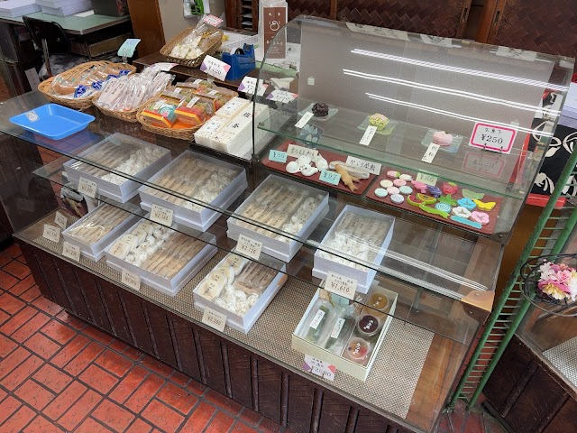
| 営業時間 | 月・火・水・木・金・土 9:00〜18:00 |
|---|---|
| 定休日 | 日曜 |
| 住所 | 岐阜県岐阜市今小町１８ |
| 予約 | 要確認 — ☎ 058-262-0067 ／ 公式サイト |
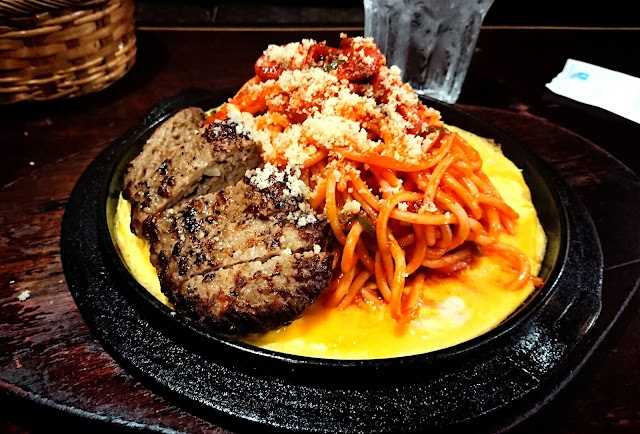
| 営業時間 | 月・火・水・木・金・土 6:30〜14:30 ／ 日 6:30〜11:00 |
|---|---|
| 定休日 | なし(要最終確認) |
| 住所 | 岐阜県岐阜市柳ケ瀬通３丁目２４ |
| 予約 | 要確認 — ☎ 058-262-2087 |
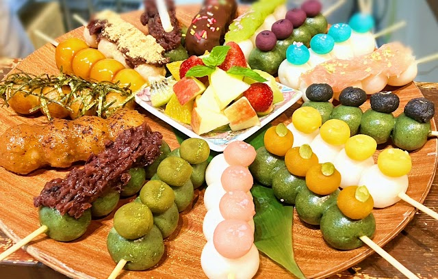
| 営業時間 | 月・水・木・金 9:00〜17:00 ／ 土・日 8:00〜17:00 |
|---|---|
| 定休日 | 火曜 |
| 住所 | 岐阜県岐阜市鏡島中２丁目２１−５ |
| 予約 | 要確認 — ☎ 058-333-1123 ／ 公式サイト |
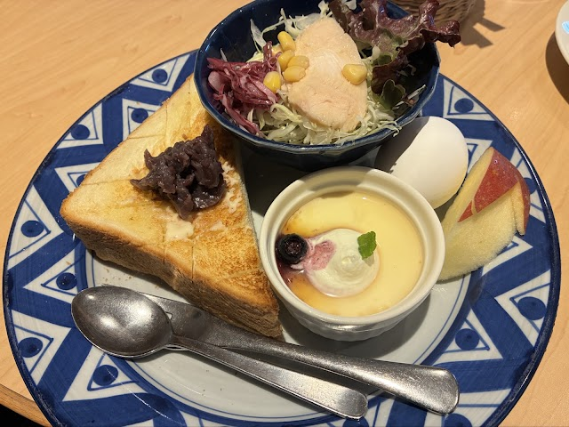
| 営業時間 | 火・水・木・金 9:00〜17:00 ／ 土 8:00〜17:00 |
|---|---|
| 定休日 | 月・日曜 |
| 住所 | 岐阜県岐阜市一松道１丁目４７ |
| 予約 | 要確認 — ☎ 058-240-1793 ／ 公式サイト |
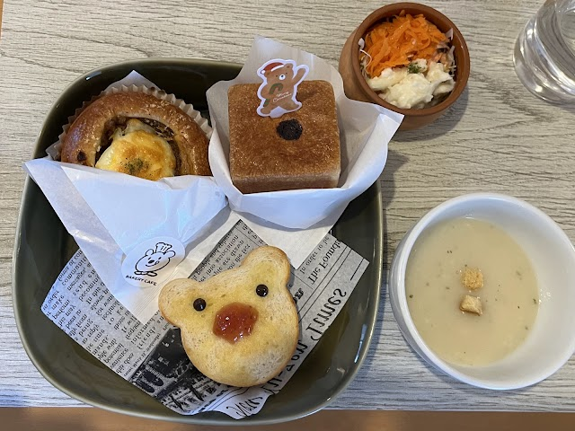
| 営業時間 | 水・木・土・日 9:00〜17:30 |
|---|---|
| 定休日 | 月・火・金曜 |
| 住所 | 岐阜県岐阜市北一色９丁目１０−４ |
| 予約 | 要確認 — ☎ 058-213-9473 ／ 公式サイト |
| 営業時間 | 火・水・木・金 9:00〜16:00 ／ 土・日 8:00〜16:00 |
|---|---|
| 定休日 | 月曜 |
| 住所 | 岐阜県岐阜市西鶉１丁目７８ |
| 予約 | 可 — ☎ 058-277-7007 ／ 公式サイト |
| 営業時間 | 月・火・水・木・金 11:00〜16:00 ／ 土・日 9:00〜16:00 |
|---|---|
| 定休日 | なし(要最終確認) |
| 住所 | 岐阜県岐阜市東鶉３丁目５９ |
| 予約 | 可 — ☎ 080-3700-5177 ／ 公式サイト |
本ガイドは個人利用目的で作成。掲載情報は2026年8月時点の調査に基づく。写真出典: Google Maps投稿写真(©各投稿者/Google)。